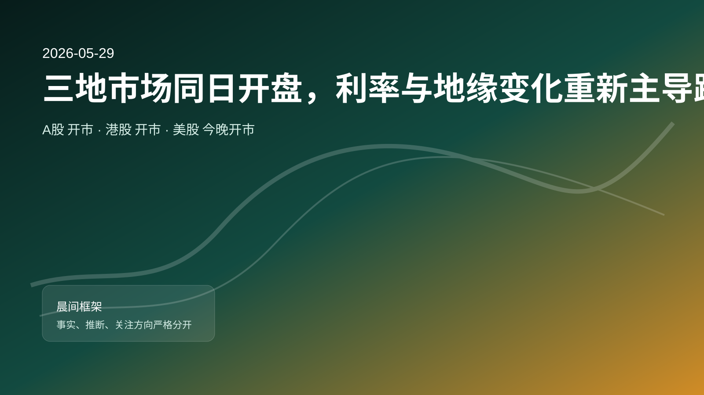
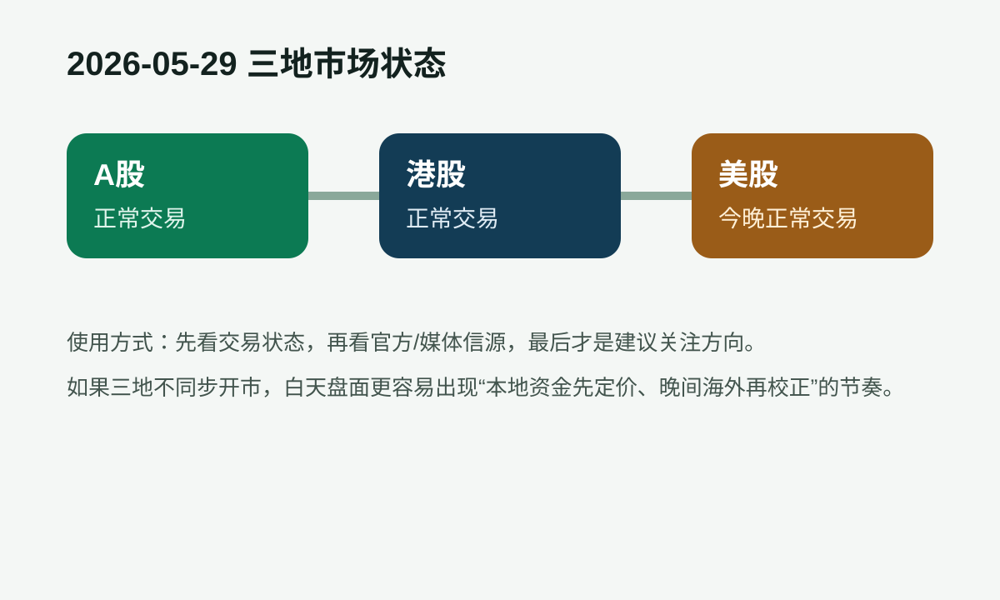

事实：最新全球头条抓取不足。
- 推断：今天需要更多依赖盘中价格与官方口径确认方向。

A股今天正常交易；港股今天正常交易；美股将在北京时间今晚恢复或维持交易。今天的盘面主导变量集中在 AI 资本开支、半导体链与成长风格再定价。
事实：最新全球头条抓取不足。
事实：今日数据精选：培育钻石行业正被AI带热；25岁以下的人说话量下降快。来源：搜狐网｜2026-05-28 21:36 UTC。 【早报】证监会：增设创业板第四套上市标准；主板ST股涨跌幅拟调整为10%。来源：财联社｜2026-05-27 20:39 UTC。 相聚鹏城话机遇 创新成长向未来——深交所举办2026全球投资者大会。来源：Sina finance｜2026-05-28 09:02 UTC。
事实：Federal Reserve Board issues enforcement actions with former employee of Atlantic Union Bank and former employee of Frost Bank。来源：Federal Reserve｜2026-05-28 15:00 UTC。 Minutes of the Board's discount rate meeting on April 20 and 29, 2026。来源：Federal Reserve｜2026-05-26 18:00 UTC。 Kevin Warsh takes oath of office as chairman and a member of the Board of Governors of the Federal Reserve System, and the Federal Open Market Committee unanimously selects Warsh as its chairman。来源：Federal Reserve｜2026-05-22 20:15 UTC。
事实：为何重拳整治跨境证券交易？。来源：新浪财经｜2026-05-27 23:14 UTC。

今日风险提示与关键日程
关注理由：新闻流里如果 AI、芯片和大模型更密集，增量资金更愿意追逐高弹性成长；如果政策与监管口径更强，金融和制度受益链条更容易先被定价。
催化因素：政策口径、成交额放大、核心龙头指引或海外科技股晚间反馈。
主要风险：高位波动、估值消化不足，或北向/情绪没有同步放大。
关注理由：如果宏观稳增长与消费修复相关表述增多，内需链更适合看边际改善；若地缘、关税和能源新闻更密，资源对冲属性会更突出。
催化因素：宏观政策增量、商品价格变化、地缘与贸易事件的边际升级或缓和。
主要风险：价格传导慢、需求验证不足，或单纯主题化导致追高回撤。
关注理由：美股仍是全球成长资产的估值锚，AI 龙头的资本开支、订单与监管口径会直接影响亚洲成长链的溢价。
催化因素：Fed/SEC 更新、科技龙头新闻、10Y 美债收益率与纳指期货方向。
主要风险：收益率上行压估值、监管强化或龙头业绩/指引不及预期。
关注理由：港股对海外情绪更敏感，平台经济和南向资金往往一起决定指数弹性；若政策线更强，高股息金融也容易成为避震仓位。
催化因素：南向资金恢复、平台公司新闻、港交所披露与人民币汇率。
主要风险：南向回流弱于预期、美元走强压制估值，或地产链拖累指数风险偏好。
免责声明